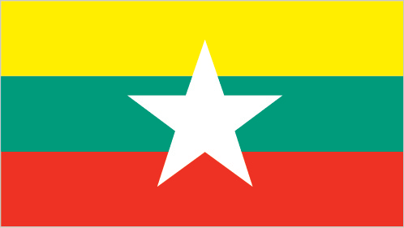
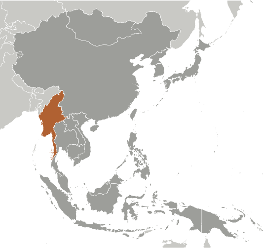
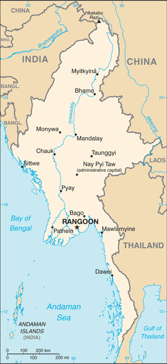

East & Southeast Asia :: BURMA
Introduction :: BURMA
-
Various ethnic Burmese and ethnic minority city-states or kingdoms occupied the present borders through the 19th century. Over a period of 62 years (1824-1886), Britain conquered Burma and incorporated the country into its Indian Empire. Burma was administered as a province of India until 1937 when it became a separate, self-governing colony; in 1948, Burma attained independence from the British Commonwealth. Gen. NE WIN dominated the government from 1962 to 1988, first as military ruler, then as self-appointed president, and later as political kingpin. In response to widespread civil unrest, NE WIN resigned in 1988, but within months the military crushed student-led protests and took power.Multiparty legislative elections in 1990 resulted in the main opposition party - the National League for Democracy (NLD) - winning a landslide victory. Instead of handing over power, the junta placed NLD leader (and 1991 Nobel Peace Prize recipient) AUNG SAN SUU KYI under house arrest from 1989 to 1995, 2000 to 2002, and from May 2003 to November 2010. In late September 2007, the ruling junta brutally suppressed protests over increased fuel prices led by prodemocracy activists and Buddhist monks, killing an unknown number of people and arresting thousands for participating in the demonstrations. In early May 2008, Burma was struck by Cyclone Nargis, which left over 138,000 dead and tens of thousands injured and homeless. Despite this tragedy, the junta proceeded with its May constitutional referendum, the first vote in Burma since 1990. Legislative elections held in November 2010, which the NLD boycotted and were considered flawed by many in the international community, saw the ruling Union Solidarity and Development Party garner over 75% of the contested seats.The national legislature convened in January 2011 and selected former Prime Minister THEIN SEIN as president. Although the vast majority of national-level appointees named by THEIN SEIN were former or current military officers, the government initiated a series of political and economic reforms leading to a substantial opening of the long-isolated country. These reforms included releasing hundreds of political prisoners, signing a nationwide cease-fire with several of the country's ethnic armed groups, pursuing legal reform, and gradually reducing restrictions on freedom of the press, association, and civil society. At least due in part to these reforms, AUNG SAN SUU KYI was elected to the national legislature in April 2012 and became chair of the Committee for Rule of Law and Tranquility. Burma served as chair of the Association of Southeast Asian Nations (ASEAN) for 2014. In a flawed but largely credible national legislative election in November 2015 featuring more than 90 political parties, the NLD again won a landslide victory. Using its overwhelming majority in both houses of parliament, the NLD elected HTIN KYAW, AUNG SAN SUU KYI’s confidant and long-time NLD supporter, as president. Burma's first credibly elected civilian government after more than five decades of military dictatorship was sworn into office on 30 March 2016.
Geography :: BURMA
-
Southeastern Asia, bordering the Andaman Sea and the Bay of Bengal, between Bangladesh and Thailand22 00 N, 98 00 ESoutheast Asiatotal: 676,578 sq kmland: 653,508 sq kmwater: 23,070 sq kmcountry comparison to the world: 41slightly smaller than Texastotal: 6,522 kmborder countries (5): Bangladesh 271 km, China 2,129 km, India 1,468 km, Laos 238 km, Thailand 2,416 km1,930 kmterritorial sea: 12 nmcontiguous zone: 24 nmexclusive economic zone: 200 nmcontinental shelf: 200 nm or to the edge of the continental margintropical monsoon; cloudy, rainy, hot, humid summers (southwest monsoon, June to September); less cloudy, scant rainfall, mild temperatures, lower humidity during winter (northeast monsoon, December to April)central lowlands ringed by steep, rugged highlandsmean elevation: 702 melevation extremes: lowest point: Andaman Sea/Bay of Bengal 0 mhighest point: Gamlang Razi 5,870 mpetroleum, timber, tin, antimony, zinc, copper, tungsten, lead, coal, marble, limestone, precious stones, natural gas, hydropower, arable landagricultural land: 19.2%arable land 16.5%; permanent crops 2.2%; permanent pasture 0.5%forest: 48.2%other: 32.6% (2011 est.)22,950 sq km (2012)population concentrated along coastal areas and in general proximity to the shores of the Irrawaddy River; the extreme north is relatively underpopulateddestructive earthquakes and cyclones; flooding and landslides common during rainy season (June to September); periodic droughtsdeforestation; industrial pollution of air, soil, and water; inadequate sanitation and water treatment contribute to diseaseparty to: Biodiversity, Climate Change, Climate Change-Kyoto Protocol, Desertification, Endangered Species, Law of the Sea, Ozone Layer Protection, Ship Pollution, Tropical Timber 83, Tropical Timber 94signed, but not ratified: none of the selected agreementsstrategic location near major Indian Ocean shipping lanes; the north-south flowing Irrawaddy River is the country's largest and most important commercial waterway
People and Society :: BURMA
-
55,123,814note: estimates for this country take into account the effects of excess mortality due to AIDS; this can result in lower life expectancy, higher infant mortality, higher death rates, lower population growth rates, and changes in the distribution of population by age and sex than would otherwise be expected (July 2017 est.)country comparison to the world: 24noun: Burmese (singular and plural)adjective: BurmeseBurman (Bamar) 68%, Shan 9%, Karen 7%, Rakhine 4%, Chinese 3%, Indian 2%, Mon 2%, other 5%note: government recognizes 135 indigenous ethnic groupsBurmese (official)note: minority ethnic groups have their own languagesBuddhist 87.9%, Christian 6.2%, Muslim 4.3%, Animist 0.8%, Hindu 0.5%, other 0.2%, none 0.1%note: religion estimate is based on the 2014 national census, including an estimate for the non-enumerated population of Rakhine State, which is assumed to mainly affiliate with the Islamic faith (2014 est.)0-14 years: 26.85% (male 7,567,976/female 7,233,577)15-24 years: 17.75% (male 4,917,290/female 4,865,264)25-54 years: 42.36% (male 11,426,913/female 11,922,728)55-64 years: 7.52% (male 1,930,253/female 2,213,263)65 years and over: 5.53% (male 1,327,811/female 1,718,739) (2017 est.)total dependency ratio: 49.7youth dependency ratio: 41.7elderly dependency ratio: 8potential support ratio: 12.6 (2015 est.)total: 28.2 yearsmale: 27.4 yearsfemale: 29 years (2017 est.)country comparison to the world: 1280.91% (2017 est.)country comparison to the world: 12118.1 births/1,000 population (2017 est.)country comparison to the world: 977.4 deaths/1,000 population (2017 est.)country comparison to the world: 114-1.5 migrant(s)/1,000 population (2017 est.)country comparison to the world: 149population concentrated along coastal areas and in general proximity to the shores of the Irrawaddy River; the extreme north is relatively underpopulatedurban population: 35.2% of total population (2017)rate of urbanization: 2.29% annual rate of change (2015-20 est.)RANGOON (Yangon) (capital) 4.802 million; Mandalay 1.167 million; Nay Pyi Taw 1.03 million (2015)at birth: 1.06 male(s)/female0-14 years: 1.04 male(s)/female15-24 years: 1.03 male(s)/female25-54 years: 0.99 male(s)/female55-64 years: 0.89 male(s)/female65 years and over: 0.77 male(s)/femaletotal population: 0.99 male(s)/female (2016 est.)25 yearsnote: median age at first birth among women 25-29 (2015/16 est.)178 deaths/100,000 live births (2015 est.)country comparison to the world: 54total: 35.8 deaths/1,000 live birthsmale: 38.8 deaths/1,000 live birthsfemale: 32.6 deaths/1,000 live births (2017 est.)country comparison to the world: 51total population: 68.2 yearsmale: 66.6 yearsfemale: 69.9 years (2017 est.)country comparison to the world: 1672.17 children born/woman (2017 est.)country comparison to the world: 10152.2% (2015/16)2.3% of GDP (2014)country comparison to the world: 1880.57 physicians/1,000 population (2012)0.6 beds/1,000 population (2006)improved:urban: 92.7% of populationrural: 74.4% of populationtotal: 80.6% of populationunimproved:urban: 7.3% of populationrural: 25.6% of populationtotal: 19.4% of population (2015 est.)improved:urban: 84.3% of populationrural: 73.9% of populationtotal: 77.4% of populationunimproved:urban: 15.7% of populationrural: 26.1% of populationtotal: 22.6% of population (2012 est.)0.8% (2016 est.)country comparison to the world: 50230,000 (2016 est.)country comparison to the world: 257,800 (2016 est.)country comparison to the world: 24degree of risk: very highfood or waterborne diseases: bacterial and protozoal diarrhea, hepatitis A, and typhoid fevervectorborne diseases: dengue fever, malaria, and Japanese encephalitiswater contact disease: leptospirosisanimal contact disease: rabies (2016)5.8% (2016)country comparison to the world: 17318.9% (2016)country comparison to the world: 27definition: age 15 and over can read and writetotal population: 75.6%male: 80%female: 71.8% (2016 est.)total: 8 yearsmale: NAfemale: NA (2007)
Government :: BURMA
-
conventional long form: Union of Burmaconventional short form: Burmalocal long form: Pyidaungzu Thammada Myanma Naingngandaw (translated as the Republic of the Union of Myanmar)local short form: Myanma Naingngandawformer: Socialist Republic of the Union of Burma, Union of Myanmarnote: since 1989 the military authorities in Burma and the current parliamentary government have promoted the name Myanmar as a conventional name for their state; the US Government has not adopted the nameetymology: both "Burma" and "Myanmar" derive from the name of the majority Burmese Bamar ethnic groupparliamentary republicname: Rangoon (Yangon); note - Nay Pyi Taw is the administrative capitalgeographic coordinates: 16 48 N, 96 09 Etime difference: UTC+6.5 (11.5 hours ahead of Washington, DC, during Standard Time)7 regions (taing-myar, singular - taing), 7 states (pyi ne-myar, singular - pyi ne), 1 union territoryregions: Ayeyawady (Irrawaddy), Bago, Magway, Mandalay, Sagaing, Taninthayi, Yangon (Rangoon)states: Chin, Kachin, Kayah, Kayin, Mon, Rakhine, Shanunion territory: Nay Pyi Taw4 January 1948 (from the UK)Independence Day, 4 January (1948); Union Day, 12 February (1947)history: previous 1947, 1974 (suspended until 2008); latest drafted 9 April 2008, approved by referendum 29 May 2008; amended 2015amendments: proposals require at least 20% approval by the Assembly of the Union membership; passage of amendments to sections of the constitution on basic principles, government structure, branches of government, state emergencies, and amendment procedures requires 75% approval by the Assembly and approval in a referendum by absolute majority of registered voters; passage of amendments to other sections requires only 75% Assembly approval (2017)mixed legal system of English common law (as introduced in codifications designed for colonial India) and customary lawhas not submitted an ICJ jurisdiction declaration; non-party state to the ICCtcitizenship by birth: nocitizenship by descent only: both parents must be citizens of Burmadual citizenship recognized: noresidency requirement for naturalization: nonenote: an applicant for naturalization must be the child or spouse of a citizen18 years of age; universalchief of state: President HTIN KYAW (since 30 March 2016); Vice Presidents MYINT SWE (since 30 March 2016) and HENRY VAN THIO (since 30 March 2016); note - the president is both chief of state and head of governmenthead of government: President HTIN KYAW (since 30 March 2016); Vice Presidents MYINT SWE (since 30 March 2016) and HENRY VAN THIO (since 30 March 2016)note: a parliamentary bill creating the position of "state counsellor" was signed into law by President HTIN KYAW on 6 April 2016; a state counsellor serves the equivalent term of the president and is similar to a prime minister in that the holder acts as a link between the parliament and the executive branchstate counsellor: State Counsellor AUNG SAN SUU KYI (since 6 April 2016); she concurrently serves as minister of foreign affairs and minister for the office of the presidentcabinet: Cabinet appointments shared by the president and the commander-in-chiefelections/appointments: president indirectly elected by simple majority vote by the full Assembly of the Union from among 3 vice-presidential candidates nominated by the Presidential Electoral College (consists of members of the lower and upper houses and military members); the other 2 candidates become vice-presidents (president elected for a 5-year term); election last held on 15 March 2016 (next to be held in 2021)election results: HTIN KYAW elected president; Assembly of the Union vote: HTIN KYAW (NLD) 360, MYINT SWE (USDP) 213, HENRY VAN THIO (NLD) 79 (652 votes cast)description: bicameral Assembly of the Union or Pyidaungsu consists of an upper house - the House of Nationalities or Amyotha Hluttaw, (224 seats; 168 members directly elected in single-seat constituencies by absolute majority vote with a second round if needed and 56 appointed by the military; members serve 5-year terms) and a lower house - the House of Representatives or Pyithu Hluttaw, (440 seats; 330 members directly elected in single-seat constituencies by simple majority vote and 110 appointed by the military; members serve 5-year terms)elections: last held on 8 November 2015 (next to be held in 2020)election results: Upper House - percent of vote by party - NLD 60.3%, USDP 4.9%, ANP 4.5%, SNLD 1.3%, military 25%, other 4%, ; seats by party - NLD 135, USDP 11, ANP 10, SNLD 3, ZCD 2, TNP 2, independent 2, other 3, military appointees 56; Lower House - percent of vote by party - NLD 58%, USDP 6.8%, ANP 2.7%, SNLD 2.7%, military 25%, other 4.8%; seats by party - NLD 255, USDP 30, ANP 12, SNLD 12, PNO 3, TNP 3, ZCD 2, LNDP 2, independent 1, other 3, canceled due to insurgence 7, military appointees 110highest court(s): Supreme Court of the Union (consists of the chief justice and 7-11 judges)judge selection and term of office: chief justice and judges nominated by the president, with approval of the Lower House, and appointed by the president; judges normally serve until mandatory retirement at age 70subordinate courts: High Courts of the Region; High Courts of the State; Court of the Self-Administered Division; Court of the Self-Administered Zone; district and township courts; special courts (for juvenile, municipal, and traffic offenses); courts martialAll Mon Region Democracy Party or AMRDP [NAING NGWE THEIN]Arakan National Party or ANP [Dr. AYE MAUNG] (formed from the 2013 merger of the Rakhine Nationalities Development Party and the Arakan League for Democracy)National Democratic Force or NDF [KHIN MAUNG SWE]National League for Democracy or NLD [AUNG SAN SUU KYI]National Unity Party or NUP [THAN TIN]Pa-O National Organization or PNO [AUNG KHAN HTI]Shan Nationalities Democratic Party or SNDP [SAI AIK PAUNG]Shan Nationalities League for Democracy or SNLD [KHUN HTUN OO]Ta'ang National Party or TNP [AIK MONE]Union Solidarity and Development Party or USDP [THAN HTAY]Zomi Congress for Democracy or ZCD [PU CIN SIAN THANG]numerous smaller partiesThai border: Ethnic Nationalities Council or ENCFederation of Trade Unions-Burma or FTUB (exiled trade union and labor advocates)United Nationalities Federal Council or UNFC [NAI HONG SAR]inside Burma: Kachin Independence Organization or KIO [Gen. LANYAW ZAWNG HRA]Karen National Union or KNU [Gen. SAW MUTU SAY POE]Karenni National People's Party or KNPP [KHUN ABEL TWEED]United Wa State Army or UWSA [BAO YOU-XIANG]88 Generation Students Group [collective leadership] (pro-democracy movement)several other Chin, Karen, Mon, and Shan factionsnote: many restrictions on freedom of expression have been relaxed by the government; a limited number of political groups, other than parties, are approved by the governmentADB, ARF, ASEAN, BIMSTEC, CP, EAS, EITI (candidate country), FAO, G-77, IAEA, IBRD, ICAO, ICRM, IDA, IFAD, IFC, IFRCS, IHO, ILO, IMF, IMO, Interpol, IOC, IOM, IPU, ISO (correspondent), ITU, ITUC (NGOs), NAM, OPCW (signatory), SAARC (observer), UN, UNCTAD, UNESCO, UNIDO, UNWTO, UPU, WCO, WHO, WIPO, WMO, WTOchief of mission: Ambassador AUNG LYNN (since 16 September 2016)chancery: 2300 S Street NW, Washington, DC 20008telephone: [1] (202) 332-3344FAX: [1] (202) 332-4351consulate(s) general: Los Angeles, New Yorkchief of mission: Ambassador Scot MARCIEL (since 27 April 2016)embassy: 110 University Avenue, Kamayut Township, Rangoonmailing address: Box B, APO AP 96546telephone: [95] (1) 536-509, 535-756, 538-038FAX: [95] (1) 511-069design consists of three equal horizontal stripes of yellow (top), green, and red; centered on the green band is a large white five-pointed star that partially overlaps onto the adjacent colored stripes; the design revives the triband colors used by Burma from 1943-45, during the Japanese occupationchinthe (mythical lion); national colors: yellow, green, red, whitename: "Kaba Ma Kyei" (Till the End of the World, Myanmar)lyrics/music: SAYA TINnote: adopted 1948; Burma is among a handful of non-European nations that have anthems rooted in indigenous traditions; the beginning portion of the anthem is a traditional Burmese anthem before transitioning into a Western-style orchestrated work
Economy :: BURMA
-
Since the transition to a civilian government in 2011, Burma has begun an economic overhaul aimed at attracting foreign investment and reintegrating into the global economy. Economic reforms have included establishing a managed float of the Burmese kyat in 2012, granting the Central Bank operational independence in July 2013, enacting a new anti-corruption law in September 2013, and granting licenses to nine foreign banks in 2014 and four more foreign banks in 2016. State Counselor AUNG SAN SUU KYI and the ruling National League for Democracy, who took power in March 2016, are seeking to improve Burma’s investment climate, following the US sanctions lift in October 2016 and reinstatement of Generalized System of Preferences trade benefits in November 2016. In October 2016, Burma passed a revised foreign investment law that consolidates investment regulations and eases the investment approval process. Parliament is also expected to pass amendments to the Companies Law and Gemstone Law later this year.The government reforms since 2011 and the subsequent easing of most Western sanctions led to accelerated growth, from under 6% in 2011 to roughly 8% in 2013 through 2016. While the economy is expected to grow by 6.5% this year, the World Bank and IMF predict that growth will return to over 7% per year during the next three years. In 2015, growth slowed slightly because of political uncertainty in an election year, summer floods, and external factors, including China’s slowdown and lower commodity prices. Burma’s abundant natural resources and young labor force are attracting foreign investment in the energy, garment, information technology, and food and beverage sectors.Despite these improvements, living standards have not improved for the majority of the people residing in rural areas. Burma remains one of the poorest countries in Asia – approximately 26% of the country’s 51 million people live in poverty. The isolationist policies and economic mismanagement of previous governments have left Burma with poor infrastructure, endemic corruption, underdeveloped human resources, and inadequate access to capital, which will require a major commitment to reverse. The Burmese government has been slow to address impediments to economic development such as insecure land rights, a restrictive trade licensing system, an opaque revenue collection system, and an antiquated banking system. AUNG SAN SUU KYI’s government is focusing on accelerating agricultural productivity and land reforms, modernizing and opening the financial sector, and developing transportation and electricity infrastructure.$303.3 billion (2016 est.)$282.2 billion (2015 est.)$260.9 billion (2014 est.)note: data are in 2016 dollarscountry comparison to the world: 54$64.37 billion (2016 est.)6.1% (2016 est.)7% (2015 est.)8% (2014 est.)country comparison to the world: 21$5,800 (2016 est.)$5,500 (2015 est.)$5,200 (2014 est.)note: data are in 2016 dollarscountry comparison to the world: 16316.5% of GDP (2016 est.)19.3% of GDP (2015 est.)21.9% of GDP (2014 est.)country comparison to the world: 21household consumption: 50.9%government consumption: 15.2%investment in fixed capital: 35.6%investment in inventories: 2.6%exports of goods and services: 19.6%imports of goods and services: -23.9% (2016 est.)agriculture: 25.6%industry: 34.7%services: 39.6% (2016 est.)rice, pulses, beans, sesame, groundnuts; sugarcane; fish and fish products; hardwoodagricultural processing; wood and wood products; copper, tin, tungsten, iron; cement, construction materials; pharmaceuticals; fertilizer; oil and natural gas; garments; jade and gems8.4% (2016 est.)country comparison to the world: 1622.13 million (2016 est.)country comparison to the world: 29agriculture: 70%industry: 7%services: 23% (2001)4% (2016 est.)0.8% (2015 est.)country comparison to the world: 4125.6% (2016 est.)lowest 10%: 2.8%highest 10%: 32.4% (1998)revenues: $8.361 billionexpenditures: $10.44 billion (2016 est.)12.6% of GDP (2016 est.)country comparison to the world: 203-3.1% of GDP (2016 est.)country comparison to the world: 1201 April - 31 March6.8% (2016 est.)9.5% (2015 est.)country comparison to the world: 1899.95% (31 December 2010)12% (31 December 2009)country comparison to the world: 2313% (31 December 2016 est.)13% (31 December 2015 est.)country comparison to the world: 59$15.84 billion (31 December 2016 est.)$14.23 billion (31 December 2015 est.)country comparison to the world: 70$23.08 billion (31 December 2016 est.)$18.55 billion (31 December 2015 est.)country comparison to the world: 83$NA$-3.789 billion (2016 est.)$-2.494 billion (2015 est.)country comparison to the world: 155$9.085 billion (2016 est.)$9.966 billion (2015 est.)note: official export figures are grossly underestimated due to the value of timber, gems, narcotics, rice, and other products smuggled to Thailand, China, and Bangladeshcountry comparison to the world: 92natural gas; wood products; pulses and beans; fish; rice; clothing; minerals, including jade and gemsChina 40.6%, Thailand 19.1%, India 8.8%, Singapore 7.6%, Japan 5.7% (2016)$12.8 billion (2016 est.)$13.74 billion (2015 est.)note: import figures are grossly underestimated due to the value of consumer goods, diesel fuel, and other products smuggled in from Thailand, China, Malaysia, and Indiacountry comparison to the world: 89fabric; petroleum products; fertilizer; plastics; machinery; transport equipment; cement, construction materials; food products‘ edible oilChina 33.9%, Singapore 14.3%, Thailand 12.5%, Japan 7.9%, India 6.9%, Malaysia 4.3% (2016)$4.63 billion (31 December 2016 est.)$3.817 billion (31 December 2015 est.)country comparison to the world: 95$8.2 billion (31 December 2016 est.)$6.401 billion (31 December 2015 est.)country comparison to the world: 117kyats (MMK) per US dollar -1,234.87 (2016 est.)1,234.87 (2015 est.)1,162.62 (2014 est.)984.35 (2013 est.)853.48 (2012 est.)
Energy :: BURMA
-
population without electricity: 36,300,000electrification - total population: 52%electrification - urban areas: 95%electrification - rural areas: 31% (2013)15.48 billion kWh (2015 est.)country comparison to the world: 8612.91 billion kWh (2015 est.)country comparison to the world: 850 kWh (2016 est.)country comparison to the world: 1100 kWh (2016 est.)country comparison to the world: 1274.783 million kW (2015 est.)country comparison to the world: 8033.9% of total installed capacity (2015 est.)country comparison to the world: 1810% of total installed capacity (2015 est.)country comparison to the world: 5465.9% of total installed capacity (2015 est.)country comparison to the world: 210.3% of total installed capacity (2015 est.)country comparison to the world: 15515,000 bbl/day (2016 est.)country comparison to the world: 762,814 bbl/day (2014 est.)country comparison to the world: 6728.5 bbl/day (2014 est.)country comparison to the world: 85139 million bbl (1 January 2017 es)country comparison to the world: 6715,870 bbl/day (2014 est.)country comparison to the world: 9691,000 bbl/day (2015 est.)country comparison to the world: 850 bbl/day (2014 est.)country comparison to the world: 13573,260 bbl/day (2014 est.)country comparison to the world: 6717.5 billion cu m (2015 est.)country comparison to the world: 344.766 billion cu m (2015 est.)country comparison to the world: 6613.91 billion cu m (2015 est.)country comparison to the world: 190 cu m (2013 est.)country comparison to the world: 95637.1 billion cu m (1 January 2017 es)country comparison to the world: 3115 million Mt (2013 est.)country comparison to the world: 91
Communications :: BURMA
-
total subscriptions: 514,385subscriptions per 100 inhabitants: 1 (July 2016 est.)country comparison to the world: 96total: 48,728,399subscriptions per 100 inhabitants: 86 (July 2016 est.)country comparison to the world: 47general assessment: meets minimum requirements for local and intercity service for business and governmentdomestic: the government eased its monopoly on communications in 2013 and granted telecom licenses to three new operators, which has resulted in a dramatic expansion of the wireless networkinternational: country code - 95; landing point for the SEA-ME-WE-3 optical telecommunications submarine cable that provides links to Asia, the Middle East, and Europe; satellite earth stations - 2, Intelsat (Indian Ocean) and ShinSat (2016)government controls all domestic broadcast media; 2 state-controlled TV stations with 1 of the stations controlled by the armed forces; 2 pay-TV stations are joint state-private ventures; access to satellite TV is limited; 1 state-controlled domestic radio station and 9 FM stations that are joint state-private ventures; transmissions of several international broadcasters are available in parts of Burma; the Voice of America (VOA), Radio Free Asia (RFA), BBC Burmese service, the Democratic Voice of Burma (DVB), and Radio Australia use shortwave to broadcast in Burma; VOA, RFA, and DVB produce daily TV news programs that are transmitted by satellite to audiences in Burma; in March 2017, the government granted licenses to 5 private broadcasters, allowing them digital free-to-air TV channels to be operated in partnership with government-owned Myanmar Radio and Television (MRTV) and will rely upon MRTV’s transmission infrastructure; the new channels are expected to begin airing programming early in 2018 (2017).mmtotal: 14,264,308percent of population: 25.1% (July 2016 est.)country comparison to the world: 128
Transportation :: BURMA
-
number of registered air carriers: 11inventory of registered aircraft operated by air carriers: 45annual passenger traffic on registered air carriers: 2,029,139annual freight traffic on registered air carriers: 3,365,967 mt-km (2015)XY (2016)64 (2013)country comparison to the world: 76total: 36over 3,047 m: 122,438 to 3,047 m: 111,524 to 2,437 m: 12under 914 m: 1 (2017)total: 28over 3,047 m: 11,524 to 2,437 m: 4914 to 1,523 m: 10under 914 m: 13 (2013)11 (2013)gas 3,739 km; oil 1,321 km (2017)total: 5,031 kmnarrow gauge: 5,031 km 1.000-m gauge (2008)country comparison to the world: 38total: 34,377 km (includes 358 km of expressways) (2010)country comparison to the world: 9312,800 km (2011)country comparison to the world: 10total: 29by type: cargo 22, passenger 2, passenger/cargo 3, specialized tanker 1, vehicle carrier 1foreign-owned: 2 (Germany 1, Japan 1)registered in other countries: 3 (Panama 3) (2010)country comparison to the world: 87major seaport(s): Mawlamyine (Moulmein), Sittweriver port(s): Rangoon (Yangon) (Rangoon River)
Military and Security :: BURMA
-
4.08% of GDP (2015)3.58% of GDP (2014)3.81% of GDP (2013)3.71% of GDP (2012)Burmese Defense Service (Tatmadaw): Army (Tatmadaw Kyi), Navy (Tatmadaw Yay), Air Force (Tatmadaw Lay) (2013)18-35 years of age (men) and 18-27 years of age (women) for voluntary military service; no conscription (a 2010 law reintroducing conscription has not yet entered into force); 2-year service obligation; male (ages 18-45) and female (ages 18-35) professionals (including doctors, engineers, mechanics) serve up to 3 years; service terms may be stretched to 5 years in an officially declared emergency; Burma signed the Convention on the Rights of the Child (CRC) on 15 August 1991; on 27 June 2012, the regime signed a Joint Action Plan on prevention of child recruitment; in February 2013, the military formed a new task force to address forced child conscription; approximately 600 children have been released from military service since the signing of the joint action plan (2015)
Transnational Issues :: BURMA
-
over half of Burma's population consists of diverse ethnic groups who have substantial numbers of kin in neighboring countries; the Naf River on the border with Bangladesh serves as a smuggling and illegal transit route; Bangladesh struggles to accommodate 29,000 Rohingya, Burmese Muslim minority from Arakan State, living as refugees in Cox's Bazar; Burmese border authorities are constructing a 200 km (124 mi) wire fence designed to deter illegal cross-border transit and tensions from the military build-up along border with Bangladesh in 2010; Bangladesh referred its maritime boundary claims with Burma and India to the International Tribunal on the Law of the Sea; Burmese forces attempting to dig in to the largely autonomous Shan State to rout local militias tied to the drug trade, prompts local residents to periodically flee into neighboring Yunnan Province in China; fencing along the India-Burma international border at Manipur's Moreh town is in progress to check illegal drug trafficking and movement of militants; over 100,000 mostly Karen refugees and asylum seekers fleeing civil strife, political upheaval, and economic stagnation in Burma were living in remote camps in Thailand near the border as of May 2017IDPs: 644,000 (government offensives against armed ethnic minority groups near its borders with China and Thailand, natural disasters, forced land evictions) (2016)stateless persons: 925,939 (2016); note - Rohingya Muslims, living predominantly in Rakhine State, are Burma's main group of stateless people; the Burmese Government does not recognize the Rohingya as a "national race" and stripped them of their citizenship under the 1982 Citizenship Law, categorizing them as "non-nationals" or "foreign residents"; under the Rakhine State Action Plan drafted in October 2014, the Rohingya must demonstrate their family has lived in Burma for at least 60 years to qualify for a lesser naturalized citizenship and the classification of Bengali or be put in detention camps and face deportation; native-born but non-indigenous people, such as Indians, are also stateless; the Burmese Government does not grant citizenship to children born outside of the country to Burmese parents who left the country illegally or fled persecution, such as those born in Thailandnote: estimate does not include stateless IDPs or stateless persons in IDP-like situations because they are included in estimates of IDPs (2016)current situation: Burma is a source country for men, women, and children trafficked for the purpose of forced labor and for women and children subjected to sex trafficking; Burmese adult and child labor migrants travel to East Asia, the Middle East, South Asia, and the US, where men are forced to work in the fishing, manufacturing, forestry, and construction industries and women and girls are forced into prostitution, domestic servitude, or forced labor in the garment sector; some Burmese economic migrants and Rohingya asylum seekers have become forced laborers on Thai fishing boats; some military personnel and armed ethnic groups unlawfully conscript child soldiers or coerce adults and children into forced labor; domestically, adults and children from ethnic areas are vulnerable to forced labor on plantations and in mines, while children may also be subject to forced prostitution, domestic service, and beggingtier rating: Tier 2 Watch List – Burma does not fully comply with the minimum standards for the elimination of trafficking, but it is making significant efforts to do so; the government has a written plan that, if implemented, would constitute making a significant effort toward meeting the minimum standard for eliminating human trafficking; in 2014, law enforcement continued to investigate and prosecute cross-border trafficking offenses but did little to address domestic trafficking; no civilians or government officials were prosecuted or convicted for the recruitment of child soldiers, a serious problem that is hampered by corruption and the influence of the military; victim referral and protection services remained inadequate, especially for men, and left victims vulnerable to being re-trafficked; the government coordinated anti-trafficking programs as part of its five-year national action plan (2015)world's second largest producer of illicit opium with an estimated poppy cultivation totaling 55,500 hectares in 2015 and an estimated potential production of 647 mt of raw opium; Shan state is the source of 91% of Burma's poppy cultivation; lack of government will to take on major narcotrafficking groups and lack of serious commitment against money laundering continues to hinder the overall antidrug effort; major source of methamphetamine and heroin for regional consumption